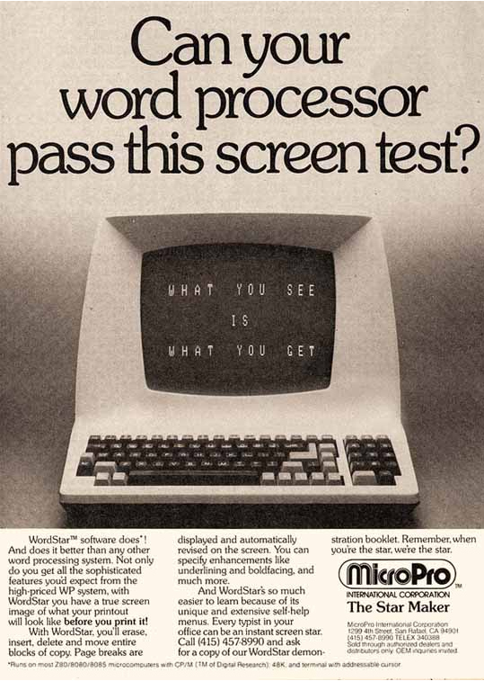

Why it represents a milestone?
WordStar was the first microcomputer word processor to offer mail merge and textual WYSIWYG. Barnaby left the company in March 1980, but due to WordStar's sophistication, the company's extensive sales and marketing efforts, and bundling deals with Osborne and other computer makers, MicroPro's sales grew from $500,000 in 1979 to $72 million in fiscal year 1984, surpassing earlier market leader Electric Pencil. By May 1983 BYTE magazine called WordStar "without a doubt the best-known and probably the most widely used personal computer word-processing program".
The company released WordStar 3.3 in June 1983; the 650,000 cumulative copies of WordStar for the IBM PC and other computers sold by that fall was more than double that of the second most-popular word processor, and that year MicroPro had 10% of the personal computer software market. By 1984, the year it held an initial public offering, MicroPro was the world's largest software company with 23% of the word processor market.

A manual that PC Magazine described as "incredibly inadequate" led many authors to publish replacements. One of them, Introduction to WordStar, was written by future Goldstein & Blair founder and Whole Earth Software Catalog contributor Arthur Naiman, who hated the program and had a term inserted into his publishing contract that he not be required to use WordStar to write the book, using WRITE instead.
Like many other producers of successful DOS applications, WordStar International delayed before deciding to make a version for the commercially successful Windows 3.0.
The company purchased Legacy, an existing Windows-based word processor, which was altered and released as WordStar for Windows in 1991. It was a well-reviewed product and included many features normally only found in more expensive desktop publishing packages. However, its delayed launch meant that Microsoft Word had already firmly established itself as the corporate standard during the two previous years.